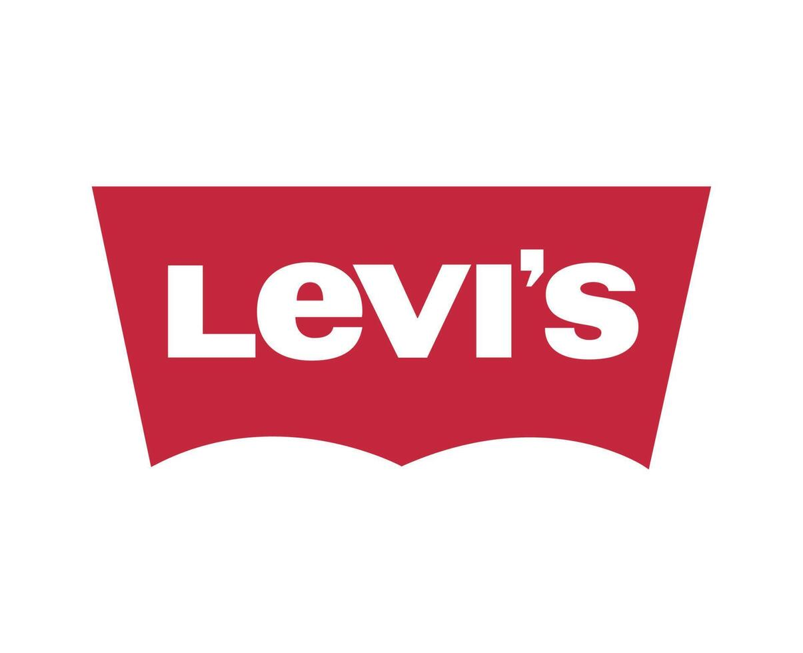

Contacto
- sara.monzo.fuentes@gmail.com
- 📞 657 37 37 29
- 🔗 GitHub
- 📍 Burjassot, Valencia. (46100)

Estudiante de 1º de DAW con interés en el desarrollo web y ganas de aplicar los conocimientos adquiridos durante el curso en un entorno profesional. Me gusta aprender haciendo, trabajar en equipo y afrontar retos tecnológicos.
Atención al cliente y apoyo en ventas. Manejo de caja y operaciones básicas. Organización, reposición y mantenimiento del visual de tienda siguiendo estándares de la marca.

Atención personalizada al cliente y apoyo en ventas. Gestión de caja y arqueo. Organización, reposición y mantenimiento de la imagen de tienda según estándares. Control de precios, gestión de rebajas y realización de pedidos.
Atención personalizada al cliente y apoyo en ventas. Gestión de caja y arqueo. Organización, reposición y mantenimiento de la imagen de tienda según estándares. Control de precios, gestión de rebajas y realización de pedidos.